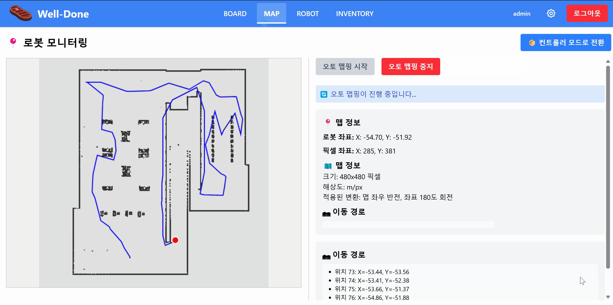
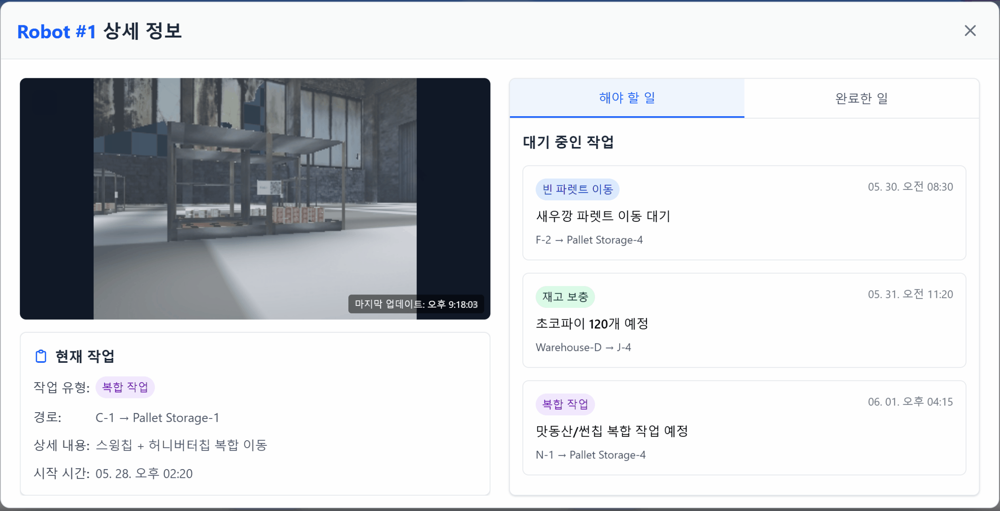
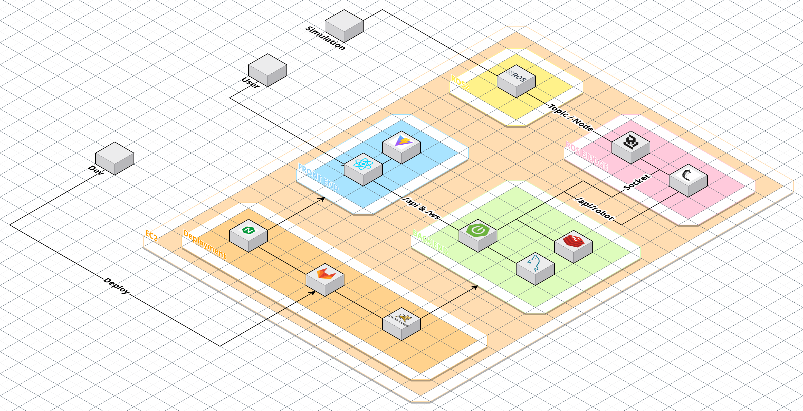

자율주행 로봇과 웹 서비스를 연동한
실시간 재고 관리 및 물류 자동화 서비스
GitHub 웰던 프로젝트

[실시간 통신 & 데이터 처리]
WebSocket 시그널링 서버 구축
로봇 위치 및 재고 데이터를 처리 및 저장
+ Redis에 저장하여 실시간 경로, 지도정보 제공
[보안]
Spring Security 구현
[서비스]
로봇 이동경로 출력 및 재고 관리 기능 구현
사용자(매장관리자) 유저/인증 기능 구현
Redis: 시뮬레이터 내의 실시간 로봇의 경로 표시.
WebSocket: 통신 안정성 및 WebRTC활용 가능성 고려
- ROS 브릿지를 통해 넘어온 정보를 백엔드에 저장
- Redis를 사용하여, 로봇의 실시간 좌표를 출력
- WebSocket을 활용하여 프론트엔드에 로봇 좌표와 로봇이 바라보는 화면 출력


[문제]
로봇의 실시간 위치 데이터를 MySQL에 저장하면서
조회 지연이 발생하여 실시간 화면 반영이 어려움
[해결]
Redis를 캐시 및 실시간 저장소로 도입하여
최신 좌표 데이터를 메모리 기반으로 관리하도록 구조 개선
[결과]
실시간 위치 데이터 조회 속도를 개선하고
화면 반영 지연을 줄여 시스템 응답성 향상
[문제]
ROS에서 전달되는 오도메트리 및 맵 데이터가
중첩된 구조로 제공되어 프론트엔드에서 직접 활용하기 어려움
[해결]
Backend에서 오도메트리 데이터의 x, y 좌표를 추출하여 단순화
맵 데이터를 2차원 grid 형태로 변환
필요한 데이터만 추출하여 WebSocket을 통해 전달하도록 구조 개선
[결과]
데이터 처리 책임을 Backend로 분리하여 시스템 구조 단순화
실시간 데이터 처리 및 시각화 성능 향상